EspañolNativo
VALSET · Portafolio profesional
Jamie Bjørn Valset Nuñez
Docente de lengua inglesa · Diseñador instruccional · Innovador educativo
Experiencia en secundaria, bachillerato, educación superior y enseñanza de idiomas, con énfasis en tecnología educativa, diseño de recursos digitales y aprendizaje centrado en el estudiante.
Perfil internacional
Idiomas para la comunicación académica y profesional
InglésNativo
NoruegoNativo
FrancésB2
ItalianoA2
Presentación
Conoce mi perfil en un minuto
Video introductorio
Presentación profesional generada para este portafolio.
Perfil profesional
Educación, comunicación e innovación
Sobre mí
Soy licenciado en Administración de Empresas Turísticas y maestro en Ciencias de la Educación. Mi trayectoria integra docencia, gestión académica, comunicación, diseño instruccional y creación de experiencias digitales para el aprendizaje.
He trabajado con estudiantes de secundaria, bachillerato, educación superior y centros de enseñanza de idiomas. Mi práctica se orienta al logro de resultados de aprendizaje, la evaluación formativa y el uso responsable de tecnologías emergentes.
4Idiomas de trabajo
A1–C1Experiencia por niveles MCER
3+Niveles educativos
DigitalDiseño de recursos
Trayectoria
Experiencia profesional
2024–2026
Docente · Bachillerato Tecnológico Teoloyucan y Centro de Enseñanza de Idiomas
Planeación didáctica, diseño de actividades, evaluación, seguimiento académico, administración de grupos y elaboración de reportes académicos y administrativos.
2019–2024
Prácticas profesionales y servicio social · Escuela Secundaria Oficial 1063
Enseñanza de inglés, historia y geografía; captura y gestión de información; atención a usuarios; documentación; administración de grupos y resolución de conflictos.
2019
Practicante · Grand Palladium Resort Spa Hotel
Manejo documental, atención al cliente, organización de grupos, resolución de conflictos y planeación de eventos.
Formación académica
Aprendizaje continuo
Maestría en Ciencias de la Educación
Universidad Internacional de La Rioja · España
ConcluidaLicenciatura en Administración de Empresas Turísticas
Universidad Bancaria de México
2025Formación técnica en Turismo
Universidad Bancaria de México
2020Competencia lingüística
Capacidad de comunicación en contextos académicos, educativos, turísticos e interculturales.
🇪🇸
Español
Nativo
🇬🇧
Inglés
Nativo
🇳🇴
Noruego
Nativo
🇫🇷
Francés
B2
🇮🇹
Italiano
A2
Evaluación profesional
Dashboard de competencias
Visualización interactiva de los resultados obtenidos en Talentview 3D, realizada el 6 de agosto de 2026.
Talentview3DAgosto 2026
90/100
Perfil general
Orientación a resultados
Enfoque decidido en alcanzar objetivos con eficiencia, productividad, proactividad y mejora continua de procesos.
8competencias evaluadas
90puntuación por competencia
7valores con 5/5
1valor con 4/5
Mapa de competencias
InteractivoEquilibrio profesional
Selecciona una tarjeta para explorar cómo se expresa cada competencia en el entorno profesional.
90/100
Resolución de conflictos
Resolución eficaz de conflictos con empatía y objetividad, identificando los puntos clave y proponiendo soluciones favorables para las partes implicadas.
Aplicación profesional
Gestión de grupos, mediación académica, comunicación institucional y atención de incidencias.
Mapa de valores
Principios profesionales
Escala de predominancia: 1 a 5
5/5
Respeto5/5
Honestidad5/5
Humildad5/5
Responsabilidad5/5
Lealtad4/5
Integridad5/5
Compromiso5/5
SolidaridadLos resultados corresponden a una evaluación profesional externa y se presentan como evidencia complementaria del perfil. El informe completo está disponible bajo solicitud profesional.
Actualización profesional
Certificaciones y competencias
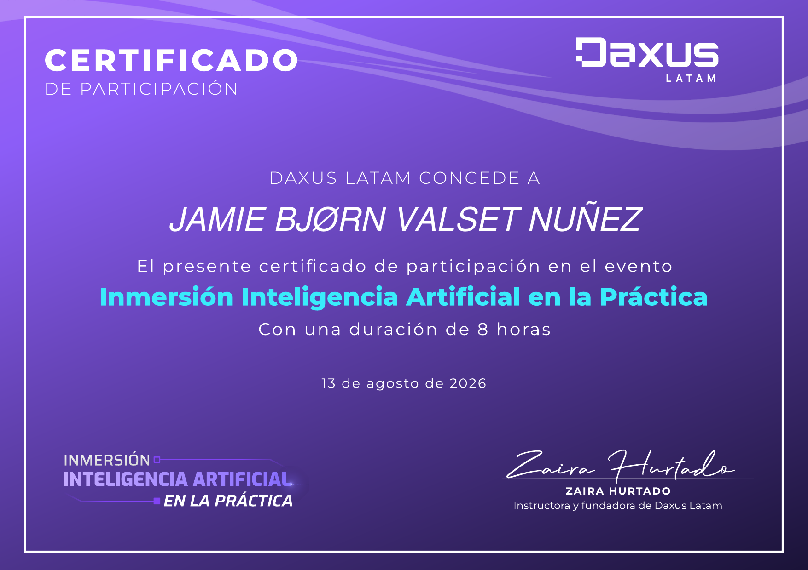
Inteligencia artificial
Inmersión Inteligencia Artificial en la Práctica
Participación de ocho horas en una inmersión dedicada a la inteligencia artificial en la práctica, impartida por Daxus Latam y respaldada por su instructora y fundadora, Zaira Hurtado.
Daxus Latam · 13 ago 2026Abrir PDF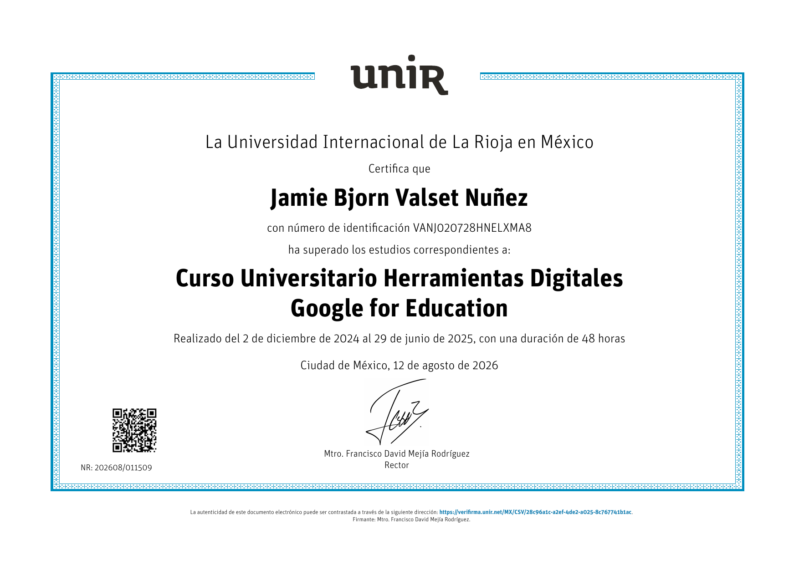
Tecnología educativa
Herramientas Digitales - Google for Education
Curso universitario de 48 horas sobre educación sin papel, comunicación, liderazgo, evaluación y transformación del aprendizaje mediante herramientas digitales.
Universidad Internacional de La Rioja (UNIR) · 2026Abrir PDF
Tecnología educativa
Teaching with AI
Taller acreditado de ocho horas sobre inteligencia artificial aplicada a la docencia.
Angloeducativo · 2026Abrir PDF
Competencia digital
Maratón de Excel
Nueve horas de formación en reportes, tablas y gráficos dinámicos, funciones, conciliaciones y dashboards interactivos.
SmartPro · 2026Ver constancia
Desarrollo profesional
Oxford Professional Development: English Pronunciation for International Intelligibility
Certificado de asistencia enfocado en pronunciación inglesa e inteligibilidad en contextos internacionales.
Oxford University Press Abrir PDF
Desarrollo profesional
Oxford Professional Development: Classroom Management
Formación orientada a la gestión efectiva del aula y al fortalecimiento de la práctica docente.
Oxford University Press Ver certificado
Evaluación institucional
Acompañamiento e inducción docente
Desempeño global de 95 %, asistencia perfecta y máxima puntuación en la observación de práctica docente.
Universidad Bancaria de México · 2025Ver documento
Servicio profesional
Calidad en la Atención al Cliente con SENATI
Formación en calidad de servicio, comunicación y atención eficaz de necesidades.
Cursa · SENATI · 2023Abrir PDFCompetencias profesionales
Innovación aplicada
Proyectos y portafolio de diseño
Elige qué deseas explorar primero. Los archivos académicos, las plataformas y simuladores, y el portafolio de diseño de CV permanecen cerrados al entrar para que tú decidas el orden de consulta.
Archivos académicos e investigación Trabajos seleccionados de maestría disponibles en PDF +
Proyectos académicos seleccionados
Investigación, diseño instruccional e innovación educativa
Esta colección reúne los proyectos académicos que también se encuentran documentados en mi perfil de LinkedIn.
Los PDF corresponden a las versiones públicas de los trabajos.
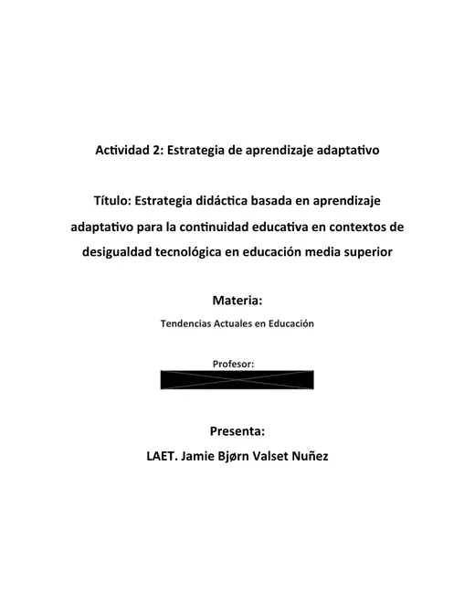
Diseño instruccional
Estrategia de aprendizaje adaptativo para la continuidad educativa y la equidad digital
Estrategia adaptativa y diferenciada para educación media superior en contextos de acceso tecnológico desigual, combinando recursos en línea, materiales de bajo consumo de datos y alternativas impresas con objetivos comunes de aprendizaje.
Estudios de Maestría en Educación · Jun 2026 Abrir PDF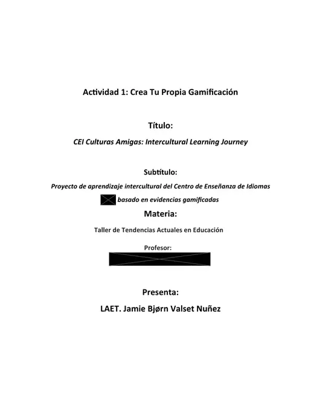
Diseño de experiencia de aprendizaje
CEI Culturas Amigas — Experiencia intercultural gamificada de aprendizaje de inglés
Intervención gamificada orientada al uso auténtico del inglés en un entorno universitario intercultural, con pasaporte de interacción, recompensas, producto audiovisual final y evaluación mediante rúbricas analíticas.
Estudios de Maestría en Educación · May 2026 Abrir PDF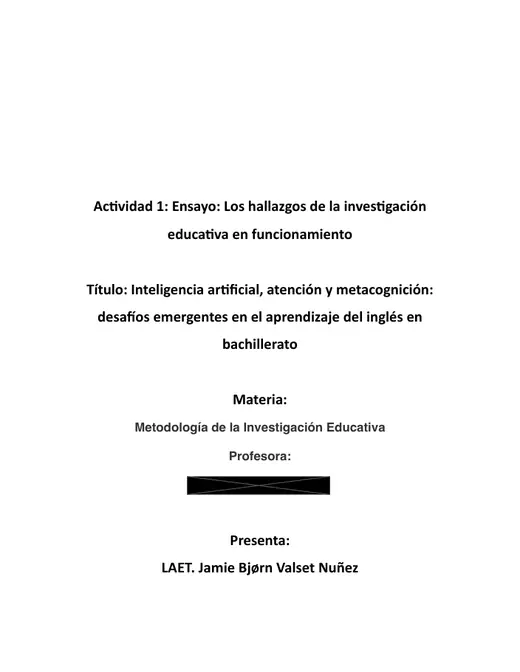
Investigación académica
Inteligencia artificial, atención y metacognición en el aprendizaje del inglés
Investigación académica sobre la relación emergente entre inteligencia artificial, atención, metacognición y aprendizaje del inglés en bachillerato, con énfasis en pensamiento crítico, autonomía y mediación pedagógica.
Estudios de Maestría en Educación · Mar 2026 Abrir PDF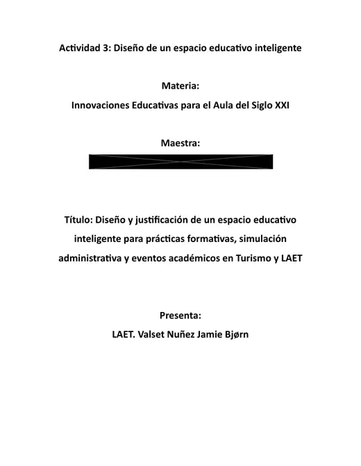
Diseño de entornos de aprendizaje
Entorno inteligente para aprendizaje experiencial y simulación en Turismo
Diseño y justificación académica de un espacio educativo inteligente para prácticas formativas, simulación administrativa y actividades académicas en Turismo y LAET, vinculado con aprendizaje experiencial y situado.
Estudios de Maestría en Educación · Jan 2026 Abrir PDF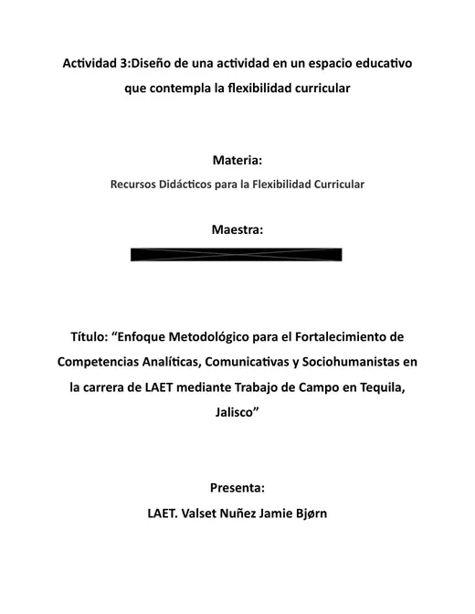
Diseño de aprendizaje aplicado
Diseño de aprendizaje de campo para Turismo: Tequila, Jalisco
Experiencia de aprendizaje de campo que integra planeación turística, análisis territorial, observación estructurada, investigación documental, comunicación profesional y trabajo colaborativo en Tequila, Jalisco.
Estudios de Maestría en Educación · Nov 2025 Abrir PDF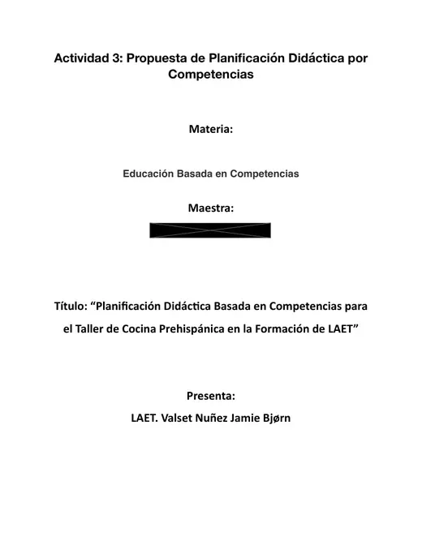
Diseño curricular
Diseño de aprendizaje basado en competencias para Turismo y Gastronomía
Planeación didáctica basada en competencias para un Taller de Cocina Prehispánica en LAET, integrando cultura, gastronomía, emprendimiento, turismo, desempeño auténtico y evaluación alineada.
Estudios de Maestría en Educación · Nov 2025 Abrir PDF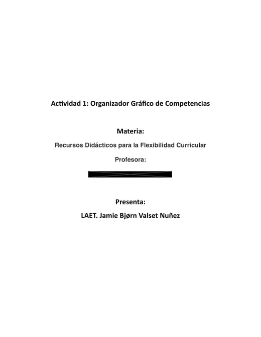
Síntesis académica y visual
Marco de educación basada en competencias aplicado al aprendizaje del inglés
Síntesis académica y organizador visual sobre educación basada en competencias, su evolución, estrategias, evaluación y aplicación al aprendizaje del inglés y al desempeño auténtico del estudiante.
Estudios de Maestría en Educación · Sep 2025 Abrir PDF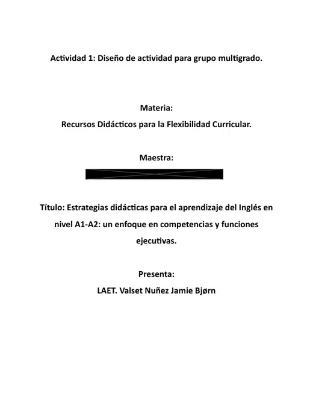
Diseño instruccional
Diseño diferenciado para el aprendizaje del inglés A1–A2
Marco didáctico para estudiantes de inglés A1–A2 que integra competencia comunicativa, diferenciación, funciones ejecutivas, autonomía y dimensiones socioemocionales del aprendizaje.
Estudios de Maestría en Educación · Sep 2025 Abrir PDF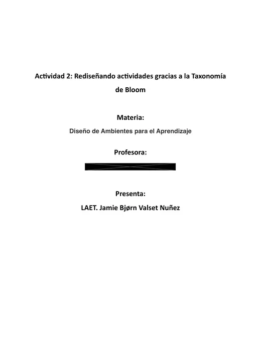
Caso de diseño instruccional
Rediseño de actividades de aprendizaje con la Taxonomía de Bloom
Rediseño de actividades para elevar la demanda cognitiva desde comprensión hacia análisis, evaluación y creación, alineando tareas, verbos observables y desempeño del estudiante.
Estudios de Maestría en Educación · May 2025 Abrir PDF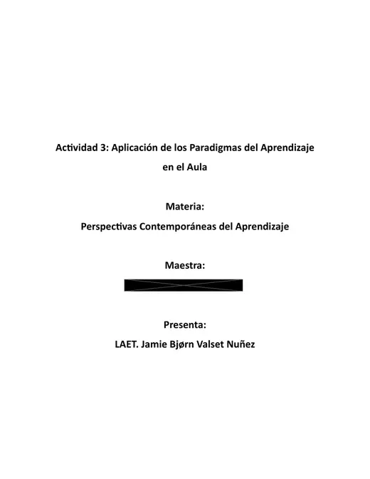
Teoría del aprendizaje aplicada
Aplicación de teorías constructivistas y humanistas a la enseñanza del inglés
Análisis y aplicación de paradigmas constructivistas y humanistas en educación media para vincular desarrollo lingüístico, aprendizaje activo, motivación, seguridad emocional y construcción colaborativa del conocimiento.
Estudios de Maestría en Educación · May 2025 Abrir PDFPlataformas, páginas web y simuladores Experiencias digitales e interactivas desarrolladas para contextos educativos +
Selección de interfaces y experiencias digitales diseñadas para apoyar el aprendizaje.

 Abrir proyecto ↗
Abrir proyecto ↗
Plataforma educativa
Valset English
Portal de aprendizaje de inglés para bachillerato técnico.
Ver plataforma ↗ Abrir proyecto ↗
Abrir proyecto ↗
Inglés avanzado
Advanced English Command Centre
Espacio académico de nivel avanzado.
Ver plataforma ↗ Abrir proyecto ↗
Abrir proyecto ↗
Simulador para turismo
Terminal de Entrenamiento Aeroportuario
Simulador contextualizado para estudiantes de turismo.
Ver simulador ↗ Abrir proyecto ↗
Abrir proyecto ↗
Laboratorio técnico
Terminal educativa de ciberseguridad
Entorno de práctica para estudiantes de ingeniería.
Ver laboratorio ↗CV Design Portfolio Diseño visual, arquitectura de información y formatos compatibles con ATS +
Portafolio demostrativo
Casos de diseño de CV
Cada caso utiliza un perfil profesional ficticio construido con suficiente detalle para reproducir la apariencia y profundidad de un CV real.
¿Buscas mi CV profesional?
Los documentos que aparecen abajo son únicamente muestras de diseño.
Académico e investigaciónInvestigación, publicaciones, métodos y credenciales académicas+
Objetivo del caso
Demostrar cómo un perfil de investigación con publicaciones, métodos y experiencia de campo puede transformarse entre una composición editorial de lectura humana y una estructura ATS de alta legibilidad.
VISUAL
Dr Eleanor Whitmore
CV editorial de investigación con jerarquía de credenciales, métodos y resultados.
Ejecutivo y liderazgoResultados, métricas, liderazgo y alcance organizacional+
Objetivo del caso
Priorizar liderazgo, alcance organizacional y resultados cuantificados sin perder claridad. La versión visual destaca métricas; la ATS convierte esos mismos logros en una narrativa ejecutiva lineal.
VISUAL
Marcus Andersen
Diseño ejecutivo con indicadores de impacto y lectura directiva.
Producto, creatividad y brandingMarca personal, sistemas de diseño y experiencia de producto+
Objetivo del caso
Equilibrar personal branding y evidencia de producto. El CV visual demuestra composición y sistema gráfico; el ATS conserva proyectos, herramientas, resultados y palabras clave en una arquitectura compatible con selección automatizada.
VISUAL
Sofia Moretti
CV creativo con identidad editorial y experiencia de producto.
Cambio de carreraCompetencias transferibles, narrativa profesional y reposicionamiento+
Objetivo del caso
Explicar una transición profesional sin ocultar la trayectoria previa. Ambas versiones convierten experiencia en comunicación en competencias transferibles para Learning & Development, con distinta jerarquía según el canal de selección.
Contacto profesional
Conversemos sobre una oportunidad
Mi información personal no se muestra públicamente. Puede enviarme un mensaje mediante este formulario y responderé al correo que indique.